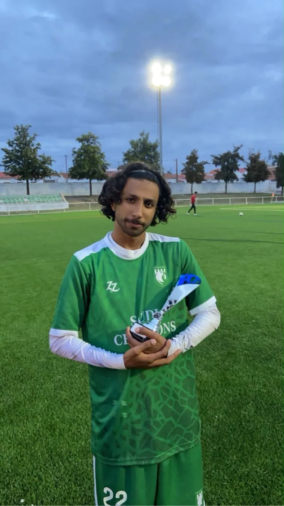
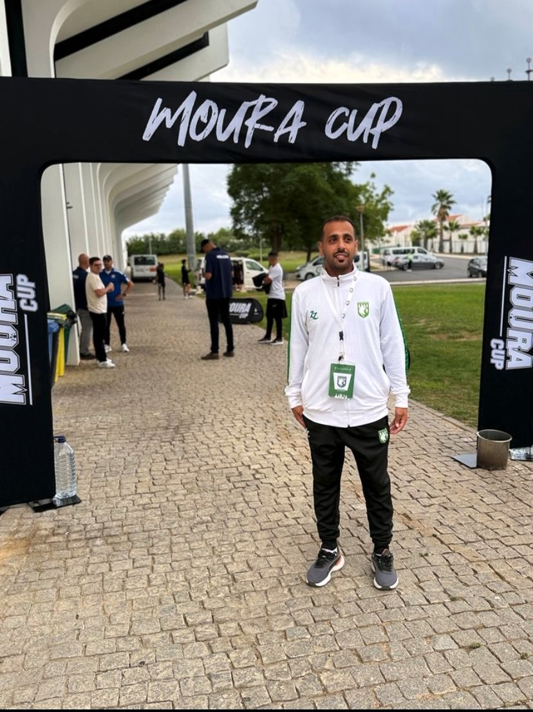
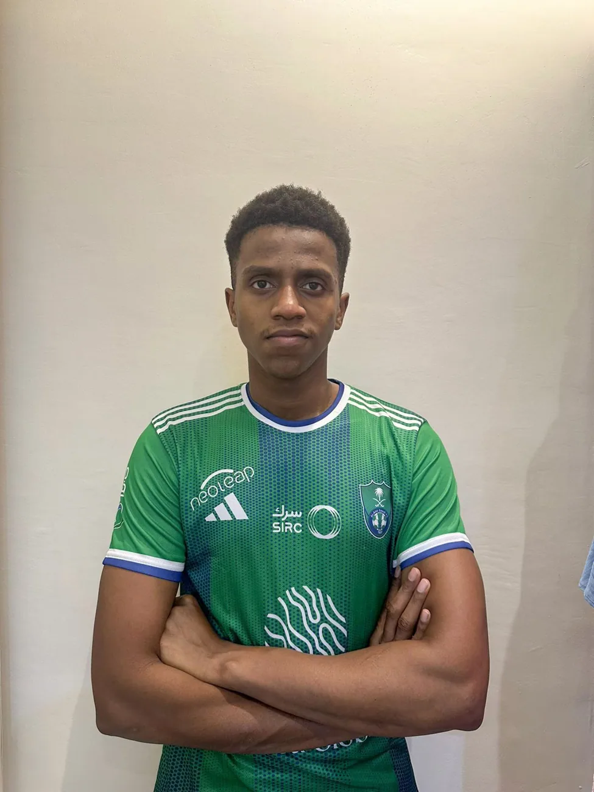
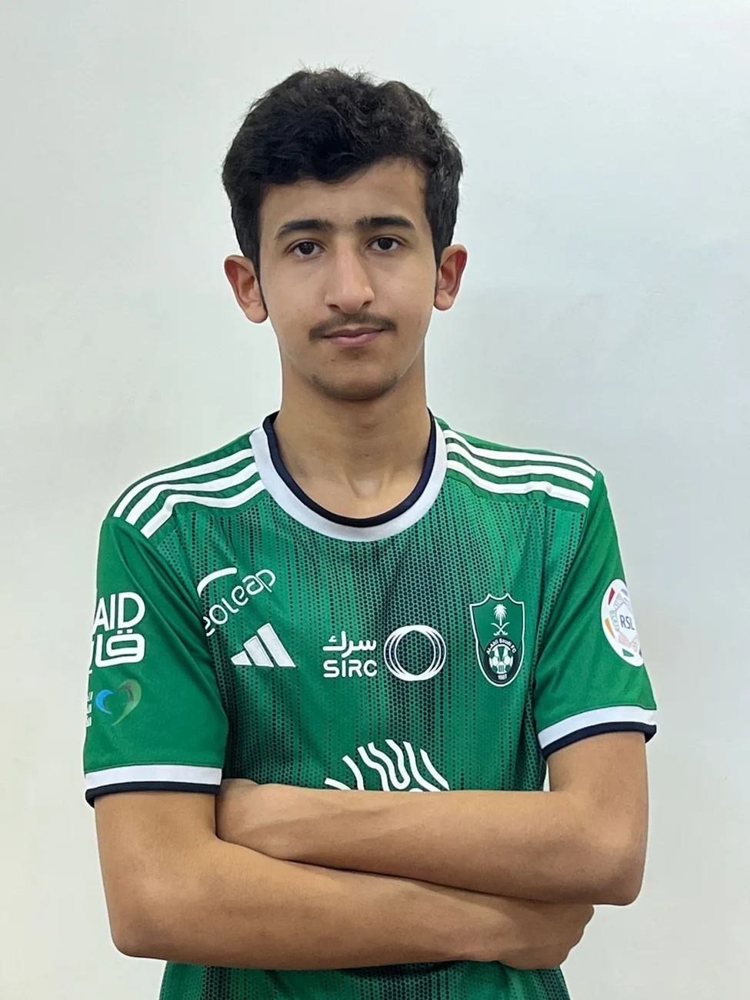
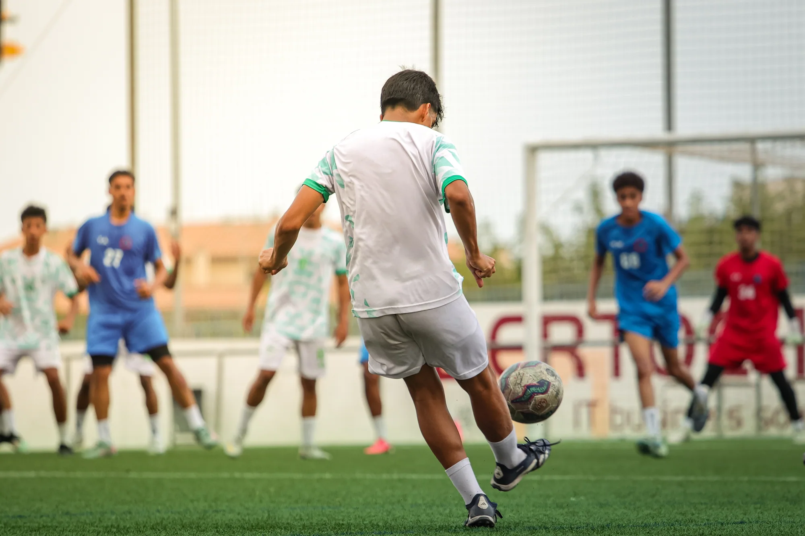

01★ أفضل لاعب
حسين الخيواني
جائزة أفضل لاعب

كأس مورا الدولي، وتكريم نجوم SMA بجوائز أفضل لاعب وأفضل حارس والهداف.
بطولات الفريق وتكريمات لاعبيه، مع الصور والأسماء التي قدّمتها SMA Players.

تتويج الفريق السعودي بعد خوض النهائي وحسم المباراة بركلات الترجيح.
ثلاث جوائز، وثلاثة أسماء نفخر بها.

01جائزة أفضل لاعب

02جائزة أفضل حارس مرمى

03جائزة الهداف

التحضير والتدريب والمنافسة جزء من مسيرة بناء اللاعب. هذه اللقطة توثق إحدى المباريات من ملفات الفريق الإسبانية، ولا تمثل صورة لتسليم جائزة محددة.
شاهد لحظات المباريات